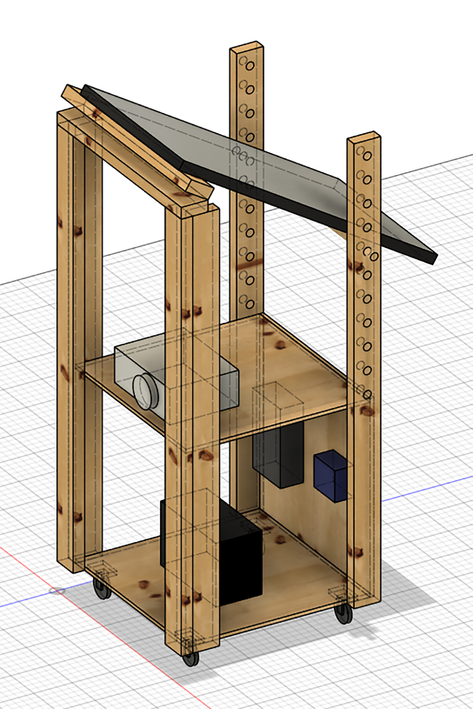
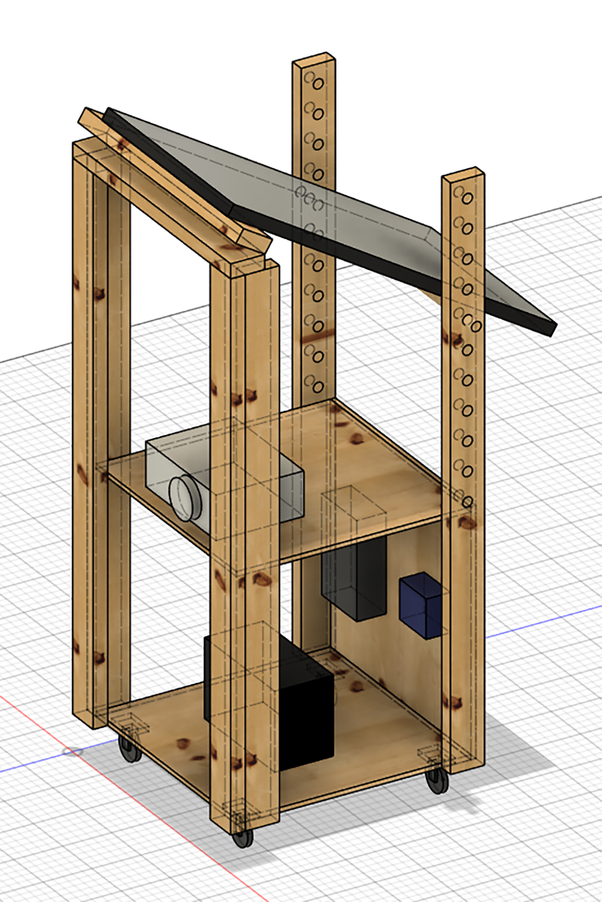
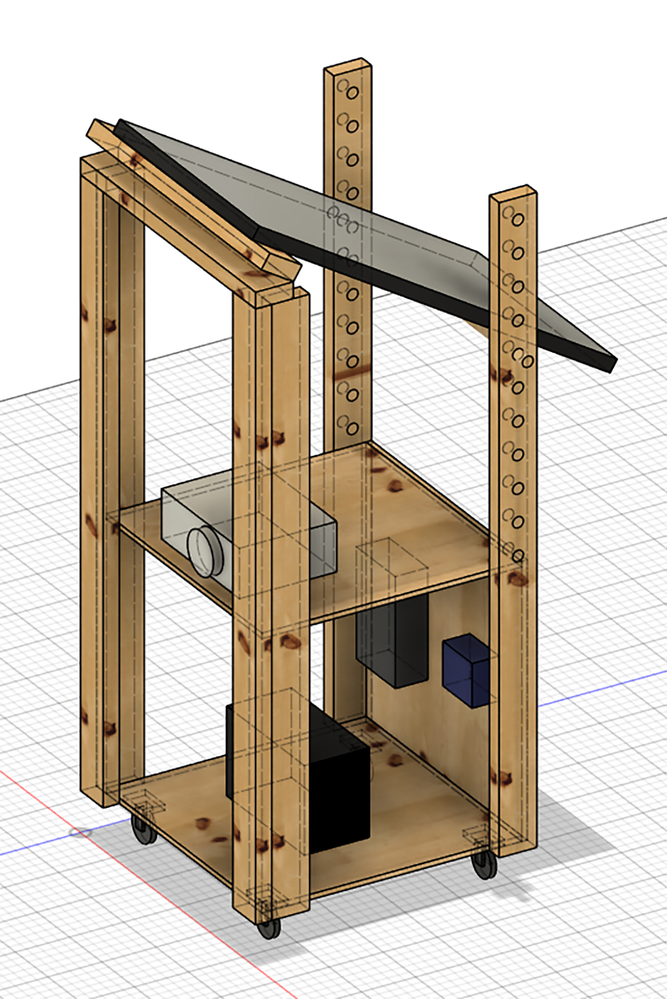
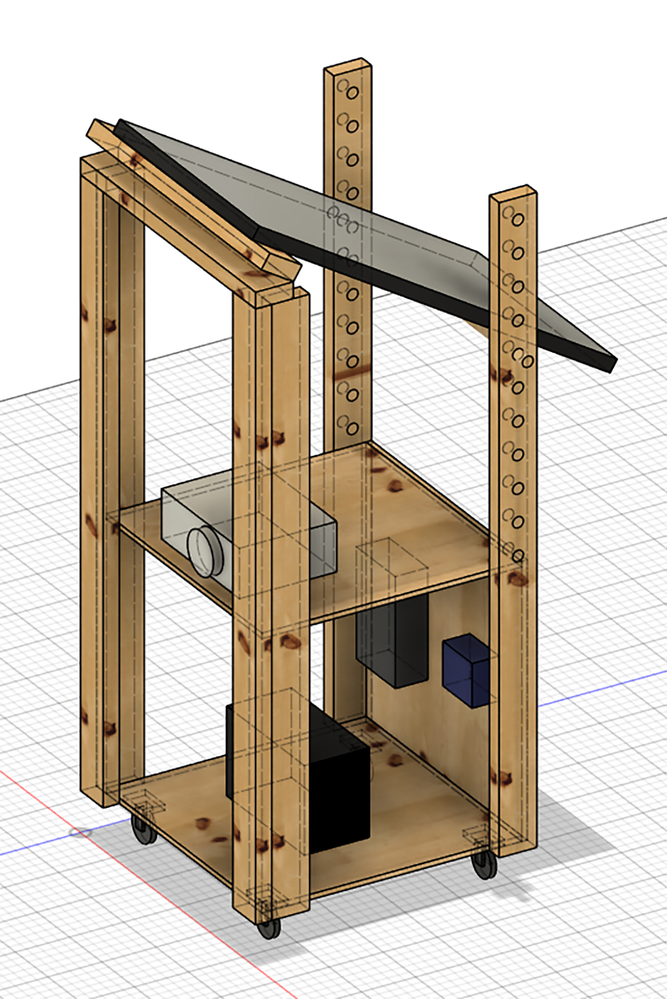

 

A website exploring some blur interactions using HTML and CSS with a touch of JavaScript. Each page applies blur effects to photos. This page uses CSS animations to move between a 0 pixel and 10 pixel blur effect in an infinite loop.